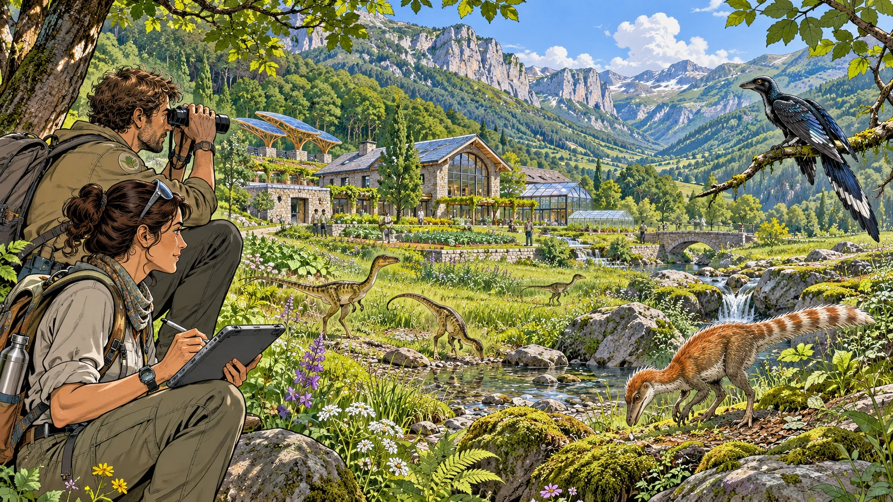

01VALLÉE D’ASPE
Le Protocole Belonce
Un centre biologique étudie la cohabitation entre les populations locales et plusieurs espèces recréées. Des incidents inquiétants commencent à se produire dans la vallée expérimentale.
Visiter le Centre biologique de Belonce
Thèmes
Professions adaptées
- Paléobiologiste
- Éthologue de paléofaune
- Vétérinaire
- Soigneur animalier
- Écologue des populations
- Garde de réserve